Decision Trees for Classification
"This oak tree and me, we're made of the same stuff."
- Carl Sagan
In the vast world of machine learning, decision trees are like the Swiss Army knives - versatile and surprisingly straightforward. These nifty tools mimic the way humans make decisions, breaking down big problems into smaller, more manageable chunks. In this blog post, we break down how decision trees work for classification, how the Gini index plays a cruitial role in constructing decision trees, and we work through an example of building a decision tree using the Gini index.
Classification Trees
At the heart of it, a classification tree is some classifier $f: \mathscr{X}\to\mathscr{Y}$ that takes in some input $x\in\mathscr{X}$ and outputs a class $y\in\mathscr{Y}$. In order to arrive at $y$, the data is passed through a series of if-else decision nodes which, when visualized, look similar to the branches of a tree. Ultimately, when data is passed through the tree and goes through enough branches, it ends up at a leaf node, which is the class that is output.
One of the benefits of decision trees is that they are pretty inexpensive to construct, and incredibly easy to interpret! Additionally, they work for categorical or numerical data, can handle missing data with easy, and can handle irrelevant features. However, they are prone to overfitting, and are not very robust. This is where random forests come in, but that is a topic for another blog post.
Building a Decision Tree - Theory
Constructing a decision tree that is optimal for a given dataset is a computationally expensive task (in fact, it is an NP-hard problem). However, the greedy algorithm we will discuss here is a good approximation of the optimal decision tree and actually works really well in practice.
The process for using the greedy algorithm to build a decision tree is a recursive process. We start with the root node and use the Gini index to determine which feature to split on. Once that is done, do that for each branch until we reach a leaf node. Before we work through an example of this recursive process, let's first talk about the Gini index.
Gini Index
In order to determine which feature to split on, we need to be able to measure how well a feature splits the data. This means we want to figure out how much each leaf constributes to the loss function. To do this, we will use the Gini index. The Gini index for approximating the entropy of each leaf is defined as follows:
$$ G_{\mathbb{D}_{\ell}} = 1 - \sum_{c\in\mathscr{Y}}\widehat{\pi}_{\ell,c}^2$$Where $\ell$ is a given tree leaf, $\mathbb{D}_{\ell}$ is the set of training points $(\mathbf{x}_i, y_i)$ where $\mathbf{x}_i$ is assigned to leaf $\ell$, $c\in\mathscr{Y}$ are the possible classes, and $\widehat{\pi}_{\ell,c}$ is the proportion of training points in $\mathbb{D}_{\ell}$ that are class $c$, defined as
$$\widehat{\pi}_{\ell,c} = \frac{1}{N_{\ell}}\sum_{(\mathbf{x}_i, y_i)\in\mathbb{D}_{\ell}}\mathbb{I}_{(y_i=c)}$$Where $\mathbb{I}$ is the indicator function.
In the case of most classification trees, we only need to consider two classes at a time while looking at a given leaf $\ell$: it is either class $c$ or it is not class $c$. Thus, calculating the total cost to the to our classification function $f_{\ell}$ on leaf $\ell$ is given by
$$\text{cost}_{\ell} = \frac{N_+}{N}G_{\mathbb{D}_{\ell_+}} + \frac{N_-}{N}G_{\mathbb{D}_{\ell_-}}$$where $N_{+}$ is the number of points in the 'yes' node, $G_{\mathbb{D}_{\ell_+}}$ is the Gini index for the 'yes' node, $N_-$ is the number of points in the 'no' node, and $G_{\mathbb{D}_{\ell_-}}$ is the Gini index for the 'no' node.
To see how this works, let's look at an example.
Building a Decision Tree - Practice
Let's say we have the following dataset,
| Patient ID | Chest Pain | Male | Smokes | Exercises | Heart Attack |
|---|---|---|---|---|---|
| 1 | Yes | Yes | No | Yes | Yes |
| 2 | Yes | Yes | Yes | No | Yes |
| 3 | No | No | Yes | No | Yes |
| 4 | No | Yes | No | Yes | No |
| 5 | Yes | No | Yes | Yes | Yes |
| 6 | No | Yes | Yes | Yes | No |
and we want to predict whether or not a patient will have a heart attack. The first thing we need to do is determine what the first split of the tree will be, i.e., what will the root node be.
Let's first consider the Chest Pain feature. We can split the data into two groups: those who have chest pain and those who do not.
| Patient ID | Chest Pain | Male | Smokes | Exercises | Heart Attack |
|---|---|---|---|---|---|
| 1 | Yes | Yes | No | Yes | Yes |
| 2 | Yes | Yes | Yes | No | Yes |
| 3 | No | No | Yes | No | Yes |
| 4 | No | Yes | No | Yes | No |
| 5 | Yes | No | Yes | Yes | Yes |
| 6 | No | Yes | Yes | Yes | No |
Above, I have highlighted the rows that have chest pain. We can see that there are $3$ patients who have chest pain, and $3$ patients who do not. Now, we build a mini tree for each of these groups to help keep track of who did and who did not have a heart attack based off chest pain.
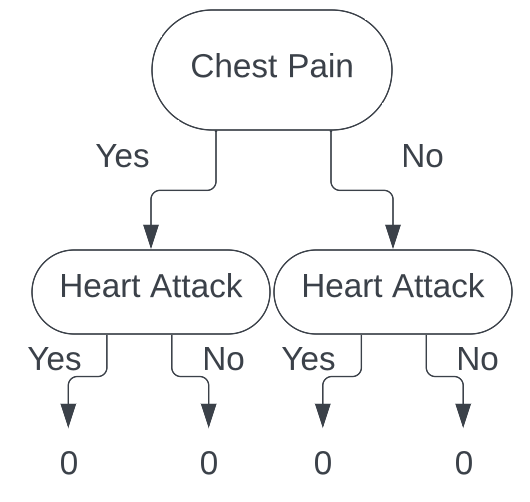Looking patient 1, we see that they do have chest pain, and did have a heart attack. We take that information, follow the branches of the tree, and end up with the following tree.
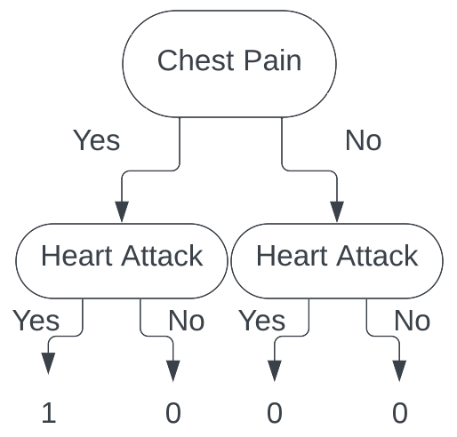Looking at patient 2, we again see that they do have chest pain, and did have a heart attack. We take that information, follow the branches of the tree, and end up with the following tree.
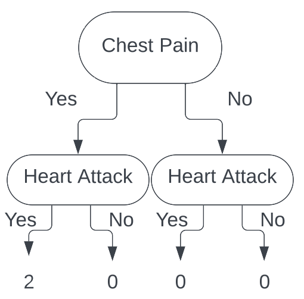Now, moving on to patient 3, we see that they did not have chest pain, and did have a heart attack. Taking that information, we follow the branches of the tree, and end up with the following tree.
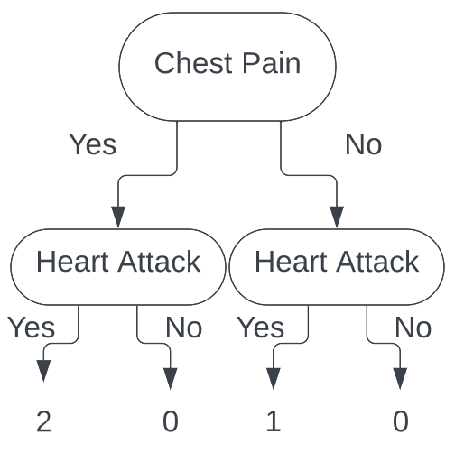Continuing this process all the way through for each patient, we end up with the following tree.
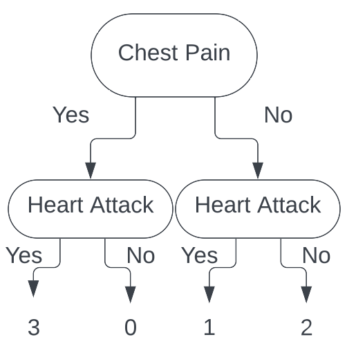With these data points sorted out, we now calculate the Gini index for each leaf. For the leaf with chest pain, we have
$$ \begin{aligned}G_{\mathbb{D}_{\ell}} = 1 - \sum_{c\in\{\text{Yes}, \text{ No}\}} \widehat{\pi}_{\ell, c}^2 &= 1 - \left[\left(\frac{3}{3}\right)^2 + \left(\frac{0}{3}\right)^2 \right] \\ &= 1 - [1^2] \\ &= 0\end{aligned}$$The first time I saw this solution, I did not understand where these numbers came from, so let's break them down. First, we have $\left(\frac{3}{3}\right)$. This is the proportion of patients who had chest pain and had a heart attack ($3$ people with chest pain had a heart attack so that is the numerator, $3$ people had chest pain so that is the denominator). Next, we have $\left(\frac{0}{3}\right)$. This is the proportion of patients who had chest pain and did not have a heart attack ($0$ people with chest pain did not have a heart attack so that is the numerator, $3$ people had chest pain so that is the denominator). Thus, the Gini index for the leaf with chest pain is $0$.
Now, let's calculate the Gini index for the leaf without chest pain. We have
$$ \begin{aligned}G_{\mathbb{D}_{\ell}} = 1 - \sum_{c\in\{\text{Yes}, \text{ No}\}} \widehat{\pi}_{\ell, c}^2 &= 1 - \left[\left(\frac{1}{3}\right)^2 + \left(\frac{2}{3}\right)^2\right] \\ &= 1 - \left[\frac{1}{9} + \frac{4}{9} \right] \\ &= 1 - \left[ \frac{5}{9} \right] \\ &= \frac{4}{9}\end{aligned}$$Thus, the Gini index for the leaf without chest pain is $\frac{4}{9}$.
Now that we have the Gini index for each leaf, we can now calculate the total cost to our classification for this split.
$$\begin{aligned}\text{cost}_{\ell} = \frac{N_+}{N}G_{\mathbb{D}_{\ell_+}} + \frac{N_-}{N}G_{\mathbb{D}_{\ell_-}} &= \left(\frac{3}{6}\right)(0) + \left(\frac{3}{6}\right)\left(\frac{4}{9}\right) \\ &= (0) + \left(\frac{2}{9}\right) \\ &= \frac{2}{9} \end{aligned}$$
Thus, we have that the total cost to split our tree on the Chest Pain feature is $\frac{2}{9}$.
We now repeat this process for each feature, and choose the feature that has the lowest cost. Consider next the Male feature. Looking at our table we have
| Patient ID | Chest Pain | Male | Smokes | Exercises | Heart Attack |
|---|---|---|---|---|---|
| 1 | Yes | Yes | No | Yes | Yes |
| 2 | Yes | Yes | Yes | No | Yes |
| 3 | No | No | Yes | No | Yes |
| 4 | No | Yes | No | Yes | No |
| 5 | Yes | No | Yes | Yes | Yes |
| 6 | No | Yes | Yes | Yes | No |
Building our tree for this feature (filling in all the values), we get
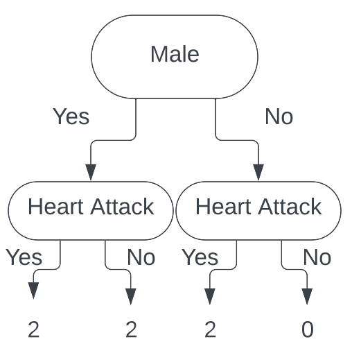Calculating the Gini index for each leaf (using the exact same process as above), we get the Gini index for male is $\frac{1}{2}$, and the Gini index for female is $0$.
Calculating the total cost to our classification for this split, we get (again, using the exact same process as above) $\frac{1}{3}$. Thus, our total cost to split
our tree on the Male feature is $\frac{1}{3}$.
Next, we consider the Smokes feature. Our tables looks like:
| Patient ID | Chest Pain | Male | Smokes | Exercises | Heart Attack |
|---|---|---|---|---|---|
| 1 | Yes | Yes | No | Yes | Yes |
| 2 | Yes | Yes | Yes | No | Yes |
| 3 | No | No | Yes | No | Yes |
| 4 | No | Yes | No | Yes | No |
| 5 | Yes | No | Yes | Yes | Yes |
| 6 | No | Yes | Yes | Yes | No |
Building our tree for this feature (filling in all the values), we get
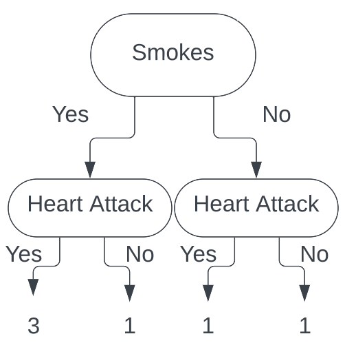
Calculating the Gini index for each leaf we get the Gini index for smokes is $\frac{3}{8}$, and the Gini index for does not smoke is $\frac{1}{2}$. Calculating
the total cost to our classification for this split, we get $\frac{5}{12}$. Thus, our total cost to split our tree on the Smokes feature is $\frac{5}{12}$.
Finally, we consider the Exercises feature. Our tables looks like
| Patient ID | Chest Pain | Male | Smokes | Exercises | Heart Attack |
|---|---|---|---|---|---|
| 1 | Yes | Yes | No | Yes | Yes |
| 2 | Yes | Yes | Yes | No | Yes |
| 3 | No | No | Yes | No | Yes |
| 4 | No | Yes | No | Yes | No |
| 5 | Yes | No | Yes | Yes | Yes |
| 6 | No | Yes | Yes | Yes | No |
Building our tree for this feature (filling in all the values), we get
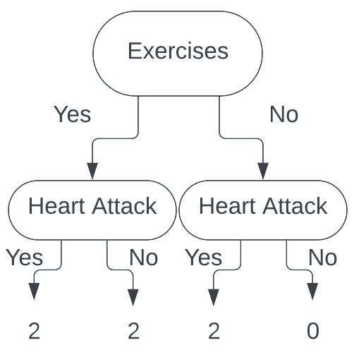
Calculating the Gini index for each leaf we get the Gini index for exercises is $\frac{1}{2}$, and the Gini index for does not exercise is $0$. Calculating
the total cost to our classification for this split, we get $\frac{1}{3}$. Thus, our total cost to split our tree on the Exercises feature is $\frac{1}{3}$.
Comparing our total costs for each feature, we see that the Chest Pain feature has the lowest cost, so we split our tree on that feature. Thus, our root node is the Chest Pain feature.
Now, we repeat this process for each branch of the tree. Luckily for us, in this case, the split on 'yes' for Chest Pain is a pure split. This means that all the patients who had chest pain had a heart attack. So, if a data point ends up
in this leaf, we will classify the person as having a heart attack. Thus, we do not need to split that branch any further.
This means that the only branch we need to split is the 'no' branch. Our tree now looks like this:
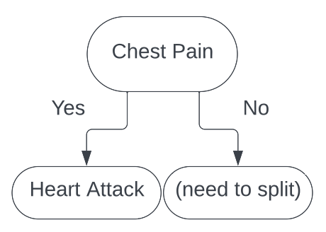We now begin the same process as splitting the root node. We consider each feature, and calculate the total cost to our classification for each feature.
We first consider Male. Our table looks like
| Patient ID | Chest Pain | Male | Smokes | Exercises | Heart Attack |
|---|---|---|---|---|---|
| 1 | Yes | Yes | No | Yes | Yes |
| 2 | Yes | Yes | Yes | No | Yes |
| 3 | No | No | Yes | No | Yes |
| 4 | No | Yes | No | Yes | No |
| 5 | Yes | No | Yes | Yes | Yes |
| 6 | No | Yes | Yes | Yes | No |
Where the green rows are people who do not have chest pain and are male, and the yellow rows are people who do not have chest pain and are female. Looking at our tree, we have
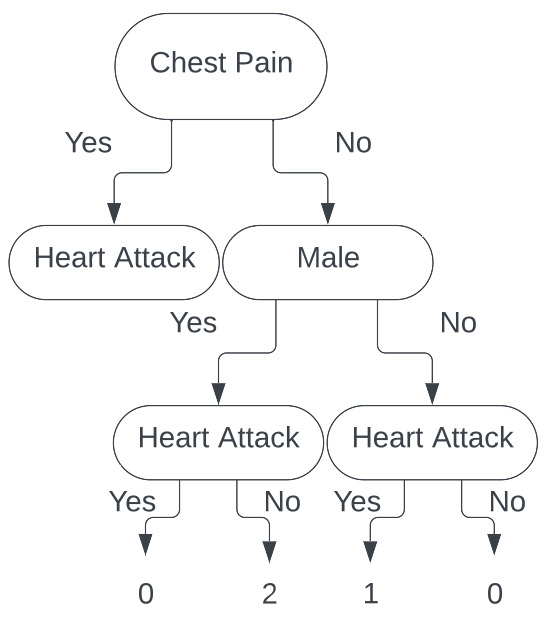We see that both of these leafs are pure splits. A pure split gives a Gini index of 0, and having both leaves have Gini index of $0$ gives a total cost to our classification of $0$. This is wonderful news and is an ideal split. While we would typically stop here, we will continue on for the sake of the tutorial.
Continuing on, we now look at the Smokes feature. Looking at our table, we see
| Patient ID | Chest Pain | Male | Smokes | Exercises | Heart Attack |
|---|---|---|---|---|---|
| 1 | Yes | Yes | No | Yes | Yes |
| 2 | Yes | Yes | Yes | No | Yes |
| 3 | No | No | Yes | No | Yes |
| 4 | No | Yes | No | Yes | No |
| 5 | Yes | No | Yes | Yes | Yes |
| 6 | No | Yes | Yes | Yes | No |
Where the green rows are people who do not have chest pain and do smoke, and the yellow rows are people who do not have chest pain and do not smoke. Looking at our tree, we have
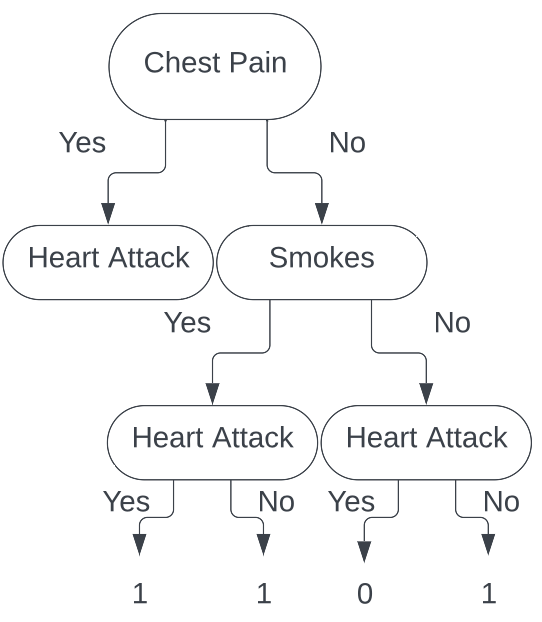
Calculating the Gini index for each leaf we get the Gini index for does not have chest pain and does smoke is $\frac{1}{2}$, and the Gini index for does not have chest pain
and does not smoke is $0$. Calculating the total cost to our classification for this split, we get $\frac{1}{3}$.
Thus, our total cost to split our tree on the Smokes feature is $\frac{1}{6}$.
Finally, looking Exercises feature, our table is
| Patient ID | Chest Pain | Male | Smokes | Exercises | Heart Attack |
|---|---|---|---|---|---|
| 1 | Yes | Yes | No | Yes | Yes |
| 2 | Yes | Yes | Yes | No | Yes |
| 3 | No | No | Yes | No | Yes |
| 4 | No | Yes | No | Yes | No |
| 5 | Yes | No | Yes | Yes | Yes |
| 6 | No | Yes | Yes | Yes | No |
Where the green rows are people who do not have chest pain and do exercise, and the yellow rows are people who do not have chest pain and do not exercise. Looking at our tree, we have
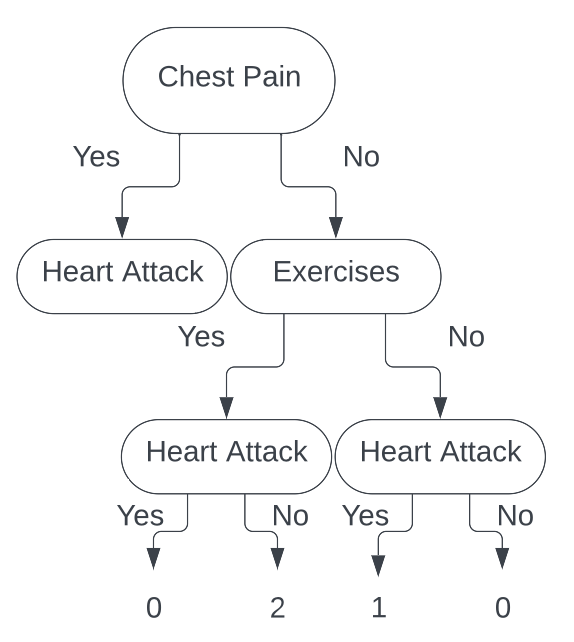
Parallel to the split made by the Male feature, this split is completely pure, again giving us a total cost to our classification of $0$. This tells us that making a
split on Male or Exercises will yield the same results. Without loss of generality, we decide to split on Exercises. Thus, our final
decision tree is
Thus, if we are given a new piece of data to classify, say
| Patient ID | Chest Pain | Male | Smokes | Exercises | Heart Attack |
|---|---|---|---|---|---|
| 7 | No | No | No | No | ? |
We can run this individual through our decision tree
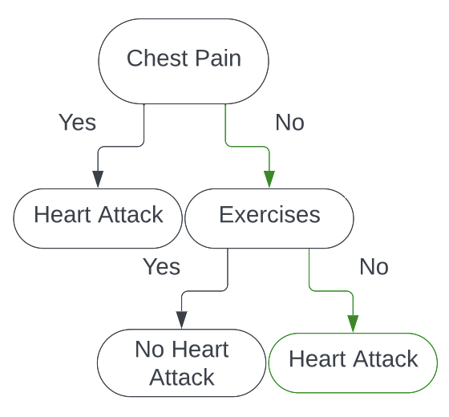And would classify them as having a heart attack!
Avoiding Overfitting in Decision Trees
One big thing to point out is that decision trees can easily overfit on the data. In our toy example, the maximum number of samples we had per leaf is $3$, and one leaf had only $1$ sample in it. This is a dangerous way to classify because that $1$ sample could very easily be an outlier that would completely throw off future predictions. To avoid overfitting in decision trees, there are a few things we can do.
One of the first things we can do is set a minimum number of samples per leaf. This means that in order for a split to happen, there must be at least $n$ samples
present. This enables our decision tree to be a little more robust against outliers and avoid overfitting on a rabbit-hole-like part of our data. In our case, if
we set the minimum number of samples per leaf to be $3$, we would have stopped at the Chest Pain split.
Another way to avoid overfitting is setting a maximum depth of our decision tree. In our toy example, we arrived at pure splits pretty early, but if our data has more data points and more features, that is not always the case. Allowing the decision tree to continue splitting for as long as it wants can lead to severe overfitting. Thus, setting a maximum depth will overcome this.
There are additional ways to avoid overfitting in our decision trees, but we stop here for now.
Quick Example in Python
While knowing how to build decision trees by hand is nice, you will never actually do that in practice. We will now go over a quick tutorial of building a classification
decision tree using sklearn. The data we will be using to fit this tree is the data we used in this example. We will then plot the tree (visualize its branches
and leaves) and see that we build the exact same tree when we did it by hand!
Firstly, here are our necessary imports.
# Necessary Imports
import pandas as pd
from sklearn.tree import DecisionTreeClassifier, plot_tree
Now that we have everything imported, we will want to create our data frame.
# Load in our data
df = pd.DataFrame({
'Patient ID': [1, 2, 3, 4, 5, 6],
"Chest Pain": [True, True, False, False, True, False],
'Male': [True, True, False, True, False, True],
'Exercises': [True, False, False, True, True, True],
'Heart Attack': [True, True, True, False, True, False]
})
Once we have our data loaded in, we now need to create our DecisionTreeClassifier, specifying criterion='gini'
so we insure that this tree will be built the same way we built our tree.
# Create our decision tree model
dtc = DecisionTreeClassifier(criterion='gini')
Now that this is done, we need to create our X and y dataframes. This is essentially for us to fit our model.
# Separate our data into X and y
X = df.drop(columns=['Patient ID', 'Heart Attack'])
y = df['Heart Attack']
With our X and y dataframes created, we can now fit our DecisionTreeClassifier.
# Fit our model
dtc.fit(X, y)Our tree is now fit! (Remarkably faster than it took us to 'fit' our tree.)
With our newly fit tree, we can now use sklearn's nifty function plot_tree to see what our decision tree looks like!
Running it is quite simple.
# Plot our tree to see what it looks like.
plot_tree(dtc, feature_names=['Chest Pain', 'Male', 'Exercises'])This produces this tree!
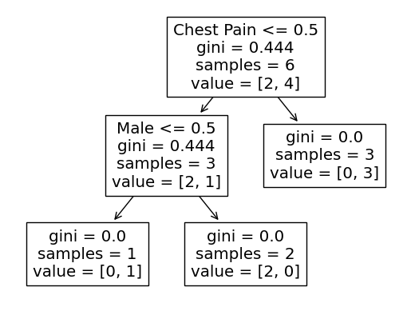As we can see, the columns it split on the same features as our tree, and the Gini index for each split is the same as what we calculated! How neat!
Conclusion
In this article, we explored how to build decision trees for classification. We discussed the Gini index, and even created our own decision tree with a toy example! I hope that through this article, you now understand how to build your own decision trees by hand. Also, I hope you now understand how you might code them up! If you want to see the code used in this article, you can find it on my Github.